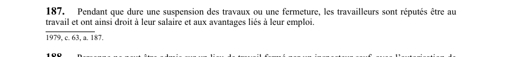

art-187-LSST : salaire maintenu pendant l'arrêt
Un article du wiki ⚖️ Recueil législatif
En bref
Un arrêt imposé pour cause de danger ne doit rien coûter au travailleur : sa rémunération se poursuit comme s'il était à son poste.
- Déclencheur : une suspension des travaux ou une fermeture du lieu de travail, ordonnée par l'inspecteur en vertu de art. 186.
- Effet : les travailleurs touchés sont réputés être au travail, même s'ils ne fournissent aucune prestation.
- Ils gardent donc leur salaire et les avantages rattachés à leur emploi, sans avoir à puiser dans leurs vacances ou leurs banques de temps.
- Durée : toute la période de l'arrêt, sans nombre de jours maximal, jusqu'à ce que l'inspecteur autorise la reprise (art. 189).
Visé : travailleur (protégé), employeur (débiteur du salaire) · Nature : obligation
🌐 LegisQuébec · 📄 PDF officiel (page 54)
Texte officiel
Pendant que dure une suspension des travaux ou une fermeture, les travailleurs sont réputés être au travail et ont ainsi droit à leur salaire et aux avantages liés à leur emploi.
Texte de l’article 187 LSST, extrait de la couche texte du PDF officiel (page 54), sans OCR ni retouche. La capture ci-dessous et le PDF font foi.
{kind=link}

Toucher l'image pour l'agrandir🔗 Ouvrir a cette page : LSST.pdf : page 54 · texte a jour au 26 mars 2024
Voir aussi
- art. 185 : interdiction entraver inspecteur · interdiction : il est interdit d'entraver un inspecteur dans l'exercice de ses fonctions, de le tromper par des réticences ou des déclarations fausses ou mensongères, de refuser de lui déclarer ses nom et adresse, ou de négliger d'obéir à un ordre qu'il peut donner.
- art. 186 : suspension travaux fermeture lieu · obligation : l'inspecteur peut ordonner la suspension des travaux ou la fermeture d'un lieu de travail et apposer les scellés lorsqu'il juge qu'il y a danger pour la santé, la sécurité ou l'intégrité physique ou psychique des travailleurs ; il doit alors motiver sa décision par écrit.
- art. 188 : accès lieu travail fermé · interdiction : personne ne peut être admise sur un lieu de travail fermé par un inspecteur, sauf les personnes autorisées qui exécutent les travaux nécessaires pour éliminer le danger ; l'employeur, le maître d'oeuvre.
- art. 189 : reprise travaux après fermeture · faculté : les travaux ne peuvent reprendre ou le lieu de travail être réouvert avant que l'inspecteur ne l'ait autorisé.
- ↑ Loi : LSST
Pages qui pointent ici (4)
- art-185-LSST : entrave à l'inspecteur interdite Recueil législatif
- art-186-LSST : suspension des travaux ou fermeture du lieu Recueil législatif
- art-188-LSST : accès interdit au lieu fermé Recueil législatif
- art-189-LSST : reprise des travaux sur autorisation de l'inspecteur Recueil législatif